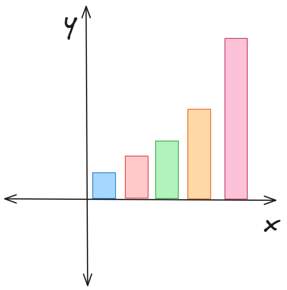

Акції — це цінні папери, які підтверджують частку власності в компанії. Вони відіграють ключову роль в економіці, тому що дозволяють компаніям залучати кошти для розвитку, а інвесторам — отримувати прибуток.
Купуючи акції, інвестор стає співвласником компанії та може заробляти на зростанні їх вартості або отримувати дивіденди. Це один із найефективніших способів формування довгострокового капіталу.
Акції також роблять економіку прозорішою: публічні компанії зобов’язані звітувати про свої фінансові результати, що підвищує довіру та стабільність ринку. Завдяки цьому капітал рухається туди, де він потрібен найбільше.
У підсумку: акції — це інструмент, який допомагає компаніям рости, інвесторам заробляти, а економіці — розвиватися.